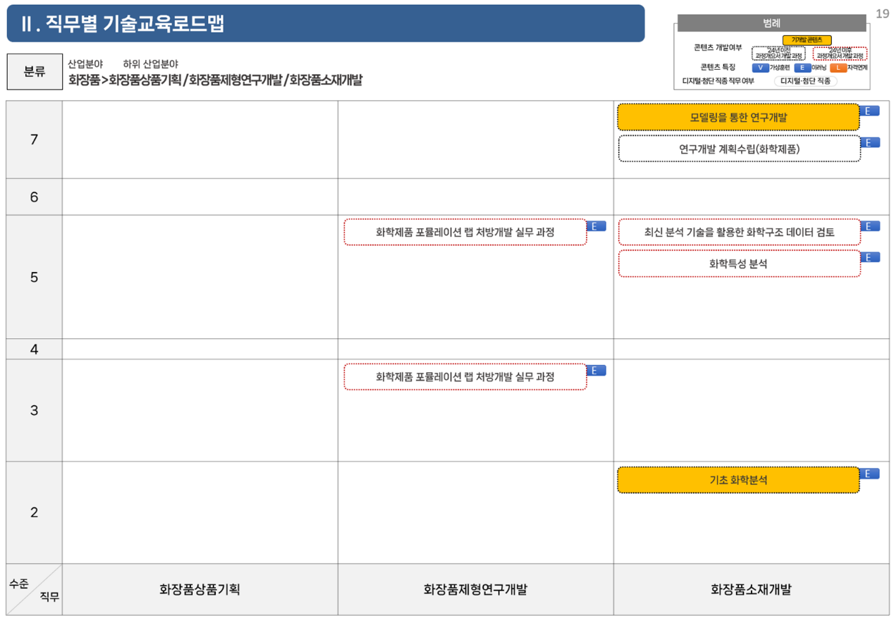

정성제안서 §Ⅰ-1 제안 배경 — PPT 슬라이드 3장 시각화 v0.1
16:9 비율 (1200×675px). 좌상단 노란 뱃지는 슬라이드 번호. v0.2 톤 가이드 준수 — AX 시대 환경 분석 → 직무 재편 → STEP의 응답(목적·전략·과제)으로 단일 논리선. Slide 1 질문을
"AX는 어디까지 와 있는가?"
로 좁힘.
01
제안 배경
Q.
AI 대전환(AX)은 지금 어디까지 와 있는가?
— 정책 · 산업의 동시 가속
Ⅰ. 제안개요
1. 제안의 목적 및 범위
인공지능은 더 이상 IT 분야에 한정된 기술이 아니다 —
산업 · 공공 · 사회 · 지역 · 국방
을 아우르는 국가 전반의 AI 대전환(AX)이 정책 · 산업 양 축에서 동시에 가속되고 있다.
AI TRANSFORMATION
AX
국가 전반의 AI 대전환
"
특정 분야에 한정된 인공지능 활용을 넘어,
산업·공공·사회·지역·국방에 이르는 국가 전반의 AI 대전환
"
— 과학기술정보통신부
산업
공공
사회
지역
국방
1
정책 가속
국가전략 · 글로벌 정합
한국 AI 정책 정비
— OECD AI 원칙 기반 2025년 현황 점검
NRC-NST 협동 제안
— "AI 3대 강국"을 향한 국가전략
글로벌 정합
— 주요국 120개 핵심 사례, 정책·인프라·인재 3축 동시 가속
2
산업 가속
제조 AX · 산업단지 · 규제
스마트제조혁신 3.0
전략 발표 (산업부, 2025.10) — AI 기반 전면 전환
제조AI 확산 TF
출범 &
M.AX 얼라이언스
— 산업계 결집
산업단지 M.AX
본격 추진 &
AI 로봇 규제 완화
— 지역 단위 AX 확산
02
제안 배경
Q.
AX는 산업의 직무와 역량을 어떻게 재편하고 있는가?
— 일터 도달 경로
Ⅰ. 제안개요
1. 제안의 목적 및 범위
AX는 산업 전 영역으로 확산되며, 일터에서는
기존 직무가 AI와 결합되어 재편되고 AI 결합형 신직무가 등장
한다 — 직업훈련 수요가
"직무 단위" → "직무 × AI 결합 단위"
로 이동.
[A] 산업 AX의 확산 — 전 분야로 도달
1
제조 AX
M.AX 얼라이언스 · 스마트제조 3.0 · 산업단지 M.AX 확산 (KIAT · 삼정KPMG)
2
공공 AX
범정부 AX 혁신 · AI 정부 서비스 사례집 · AI-augmented Engineering (삼성SDS)
3
R&D AX
화학·바이오 글로벌 R&D 기관의 AX 적용 본격화 (케미브리프 2호)
4
거버넌스 AX
전략적 미래예측에서의 AI 활용 · 선제적 거버넌스 재구성 (케미브리프 11호)
[B] 일터의 직무 · 역량 재편
①
기존 직무 분해
제조 디지털 전환이 직무를 단위 작업으로 재정의 (KLI 이슈페이퍼 2025-13)
②
AI 결합 재구성
업무 단위에 AI가 결합 — 기업 AI 활용 확산 (딜로이트 2026)
③
신직무 출현
AI 결합형 신직무 등장, HR · 인재 운영 표준 재정립 (딜로이트 2026 HR)
④
자격·역량 체계 갱신
AX 시대 인재 패러다임 — 직무 × AI 결합 역량이 표준 (양희태, 정책포커스 48호)
▶ 모든 산업 직무가 AI와 결합되는 시대 →
"직무 × AI 결합 단위"
의 평생직업능력개발 콘텐츠가 표준이 되어야 한다
03
추진 목적 및 범위
Q.
그렇다면 한기대 STEP은 무엇을 해야 하는가?
— 본 사업의 추진 목적 · 전략 · 과제
Ⅰ. 제안개요
1. 제안의 목적 및 범위
STEP은 국내 평생직업능력개발의 콘텐츠 표준 —
SLR 고도화
와
10대 산업 분야 × AX 융합형 신규 과목 도출
로 변화에 응답한다.
AS-IS
STEP 학습 로드맵(SLR) — 현 자산 (기개발 2,586개)

※ 작년 결과물 SLR 도식 예시 — 10대 NCS 대분류 기반 · 직무별 학습 로드맵
▶
RFP §II-1 — 본 사업이 도출할 신규 400과목
100
평생직업
능력개발
100
디지털·
첨단
200
융합
(AI+X)
• 평생 — 10대 NCS 대분류 / 디지털·첨단 — 21대 직종
•
융합(AI+X) 200과목
— AX · GX · 안전(로봇) 등 산업 × AI 결합
• +
SLR 관리매뉴얼
1부 ·
Master DB 최신화
목적
AI · 디지털 전환 시대에 필요한 STEP 학습 로드맵(SLR) 고도화 및 STEP 10대 산업 분야 × AX 융합형 신규과목 도출
전략
RENEW
1. SLR 최신화
DEVELOP
2. 수요조사 · 신규과목 도출 체계화
SCALE
3. AX 시대 SLR 고도화
과제
1-1. NCS·SQF 개편 및 신규 개발 내용 최신화
산업인력공단·ISC 최신 자료 확보
기개발 2,586개 매핑·미활용 도출
1-2. Master DB + SLR 최신화·고도화
Master DB 1차 업데이트
10대 산업 분야별 SLR 갱신
2-1. NCS 세분류 우선순위 도출
정량·정성 수요분석 + 설문조사
2-2. NCS 능력단위 우선순위 도출
능력단위 풀 추출 · E/V/EV/AX 유형 설정
2-3. 신규 과목 도출 · 과목개요서 개발
평생·디지털 각 100 · 융합(AI+X) 200
3-1. AI 활용 자동화 · DB 자산화
Master DB 검증·자동 반영 도구
AX 융합 스킬셋 DB 자산화
3-2. SLR 체계적 관리 매뉴얼 업데이트
로드맵·DB·과목 관리 가이드
27·28년 후속사업 출발점 (RFP §I-6)
PPT 변환 가이드
슬라이드 비율
— 16:9 가로 (1200×675px 기준 · PPT 표준 1920×1080)
컬러 팔레트
— 네이비 #1B3A57 / 진한 네이비 #0F2438 / 블루 #3A6EA5 / 옅은 블루 #E5EEF7 / 그린 #7FBE9B (옅은 #D5EBDD) / 골드 #C9A24A / 오렌지 #E8833A
헤더 띠
— 좌측 진한 네이비 라벨 + 중앙 헤더 질문(Q. 흰색 굵게 + 골드 ?마크) + 우측 챕터 표기
본문 메시지 띠
— 옅은 블루 배경 + 좌측 5px 블루 라인 + 진한 네이비 텍스트 · 핵심 단어는 오렌지
슬라이드 1 시각화
— 좌측 진한 네이비 히어로 박스(큰 키워드 "AX" + 정의) + 5개 적용영역 + 우측 정책·산업 가속 2단 카드
슬라이드 2 시각화
— 좌측 4단 산업 AX 확산 흐름(블루) + 우측 4단 직무 재편 흐름(그린) + 하단 융합 결론 배너
슬라이드 3 시각화
— 좌측 SLR 도식 이미지(작년 결과물 활용) + 화살표 + 우측 400과목 도넛(100·100·200) + 하단 추진 목적·전략·과제 매트릭스
활용 이미지
— `images/slr_도식_예시.png` (작년 시앤피 발표자료에서 추출한 SLR 도식 예시, AS-IS 자산 표현용) / 추가 이미지가 필요한 경우 `images/배경_디지털.jpeg` 활용 가능
금지 표현
— "혁신적 AI 솔루션" / "자체 LLM 활용" / "발주처 자력 운영" (v0.2 톤 가이드)
권장 표현
— "RFP §II-1에서 명시한 ~" / "AX 시대의 ~을 반영하여" / "본 사업이 27·28년 후속사업의 출발점이 되도록 ~"